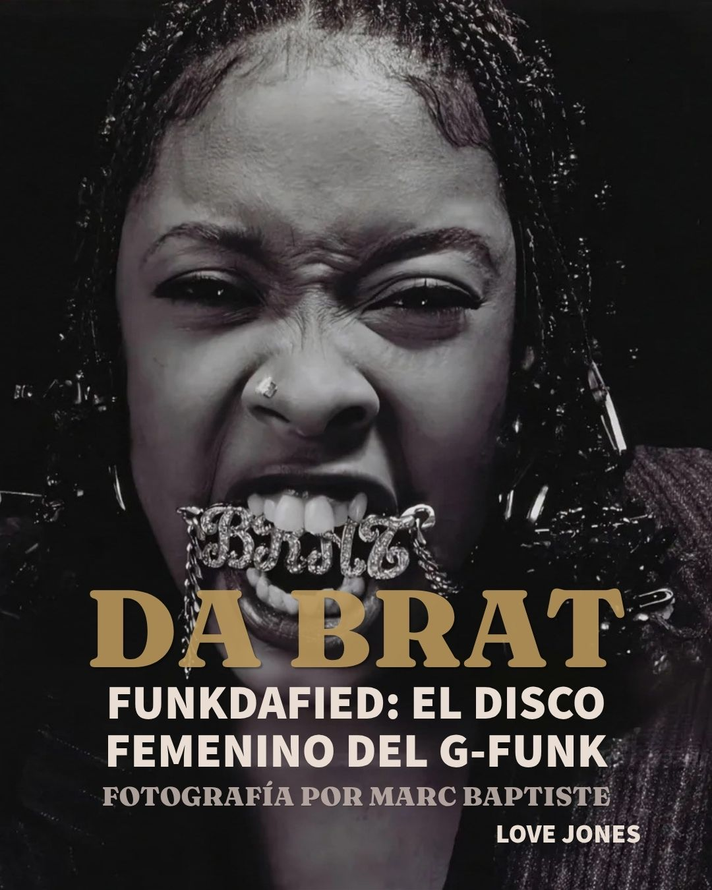
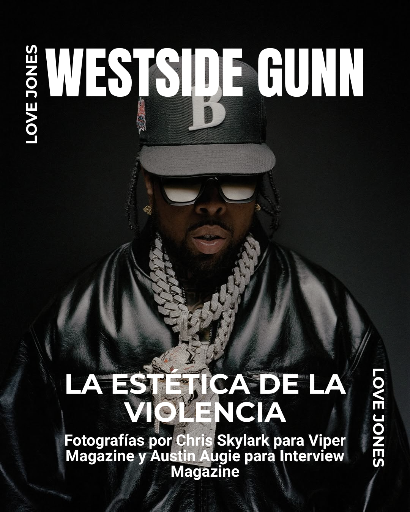
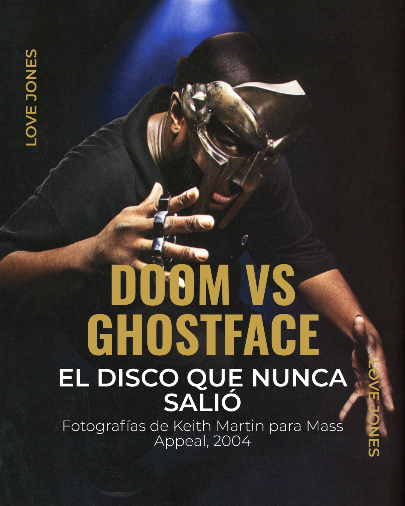
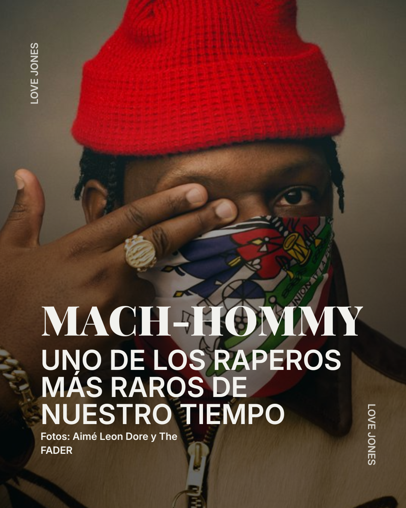

Love Jones es el aka de un escritor e investigador independiente de la ciudad de Bogotá, Colombia. Su paso por universidades como la Universidad Autónoma de Colombia y la Universidad de La Salle le dieron las bases para seguir formándose de manera independiente como escritor e investigador. Dentro de lo que podemos saber, actualmente se encuentra trabajando en un libro recopilatorio de ensayos sobre la cultura Hip-Hop.
CURADOR MUSICAL
En el 2016 crea un canal de YouTube de divulgación de la música Hip-Hop obteniendo como respuesta feedback de más de 50.000 personas, además de haber adquirido un conocimiento más profundo sobre la cultura Hip-Hop participando en la promoción y divulgación de varios proyectos musicales. Su curaduría musical se basa en la recopilación de información que permita un entendimiento musical y cultural más accesible para todos.
THA DIGGER AKA HUSTLER RESEARCHER
Su lógica de trabajo está basada en una autonomía de pensamiento crítico y objetivo. Para ello financia sus propias investigaciones que le permitan moverse libremente. Sin desmarcarse de la investigación objetiva (una especie de método científico) integra sus investigaciones con experiencias personales, dándole así al producto su marca personal.
ALGUNOS ENSAYOS
Sus ensayos adaptados para Instagram representan una pequeña parte de su línea investigativa.





